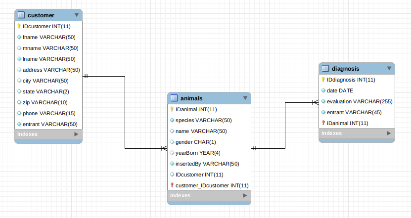
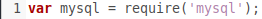
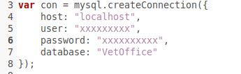
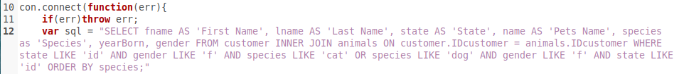
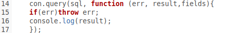
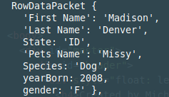
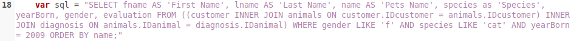
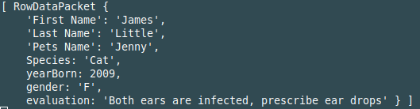

| This is my ERD for my example database |
 |
| First, I had to require the mysql package from npm. |
 |
| Then I had to login to my database, so I could select from tables in that database |
 |
| After I connected, I created a variable named 'sql' to store my query |
 |
| Then, I ran the query and put the results in a console.log |
 |
| Here's an example record from the query |
 |
After I did a two table inner join, I decided to do a three table join |
| I stored the query again, but this time I added parenthesis around the first INNER JOIN to JOIN that with the third table |
 |
| Then I ran the query and displayed the results in a console.log |
|
| Here's an example of a query result from the three table join |
 |